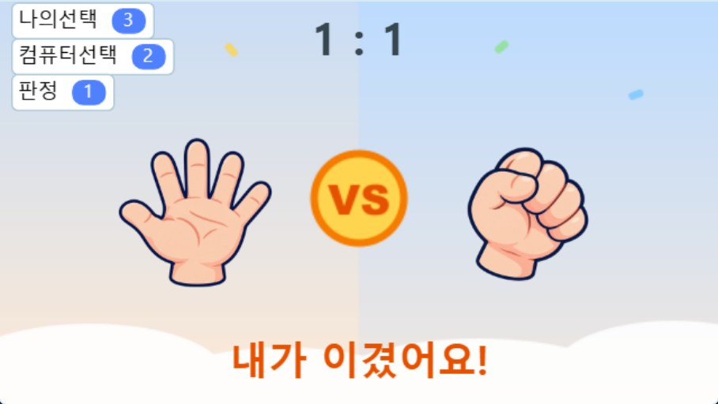
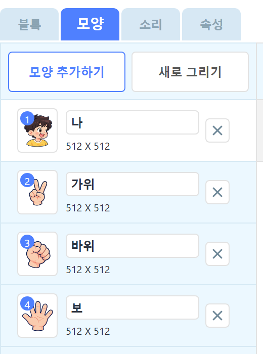
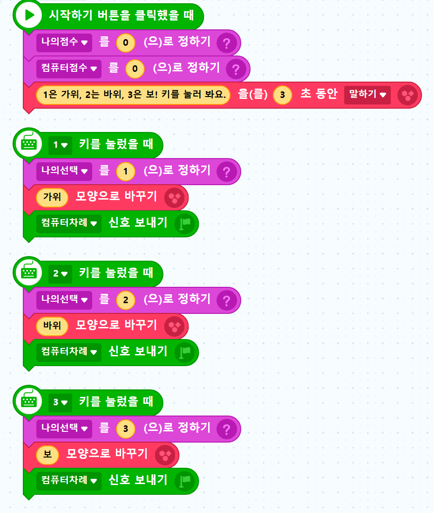
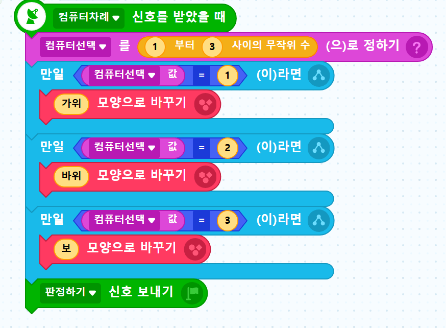
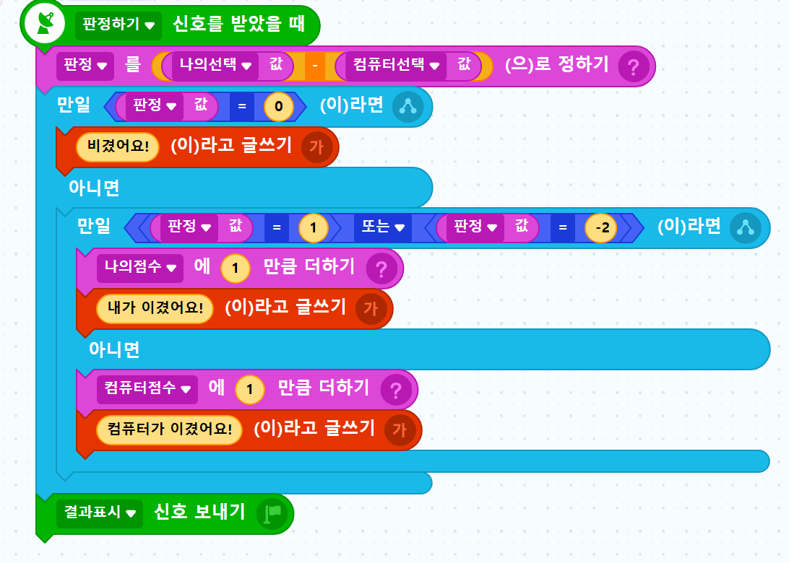
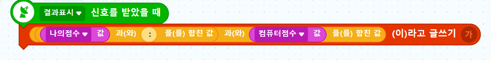
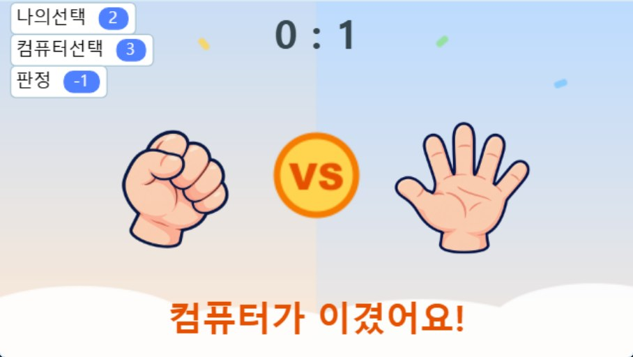
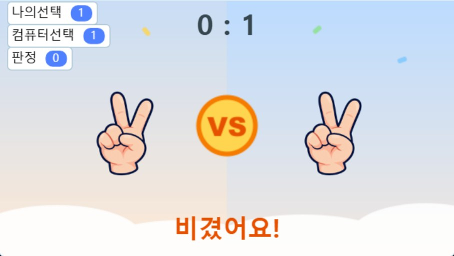

엔트리 코딩 교실
컴퓨터와
가위바위보 대결!
랜덤 가위바위보 게임 만들기
오늘의 목표
이런 게임을 만들어요

① 키를 눌러요
1, 2, 3 키로 손을 내요
② 컴퓨터도 내요
컴퓨터는 아무거나 골라요
③ 이기면 +1점!
점수판에 점수가 올라가요
0단계 · 설계
컴퓨터는 숫자를 좋아해요

가위
1

바위
2

보
3
0단계 · 준비물
무엇이 필요할까요?
오브젝트 · 등장인물
- 나 · 컴퓨터
- 점수판 글상자
- 결과 글상자
변수 · 기억 상자
- 나의선택
- 컴퓨터선택
- 판정
- 나의점수
- 컴퓨터점수
신호 · 바통
- 컴퓨터차례
- 판정하기
- 결과표시
0단계 · 흐름
게임은 이 순서로 움직여요
1·2·3
키를
눌러요
내 손이
바뀌어요
컴퓨터가
골라요
?
누가
이겼나?
+1
점수를
써요
신호 바통
컴퓨터차례
→
판정하기
→
결과표시
차례대로 넘겨요
1단계
무대 꾸미기
1
나와 컴퓨터 오브젝트를 추가해요
2
모양 탭에서 기본 → 가위 → 바위 → 보 순서로 4개를 넣어요
3
글상자 2개: 점수판, 결과
모양 이름을 가위·바위·보로 바꿔 주세요!

2·3단계 · 나 오브젝트
시작하고,
손을 내요
시작하면
점수를 0으로 만들고 규칙을 말해요
1 키를 누르면
① 나의선택을 1로 정하기
② 가위 모양으로 바꾸기
③ 컴퓨터차례 신호 보내기
2·3 키도 숫자와 모양만 바꿔서 똑같이!

4단계 · 컴퓨터 오브젝트
컴퓨터는
주사위를 굴려요
1부터 3 사이의 무작위 수
= 1, 2, 3 중 아무거나!
고른 숫자에 맞는 모양으로 바꾸고
판정하기 신호를 보내요
★ 다음 시간에 바꿀 곳
무작위 수 한 줄만 바꾸면
똑똑한 컴퓨터가 돼요

5단계 · 생각해 보기
가위바위보, 경우는 모두 몇 가지?
| 나 \ 컴퓨터 | 가위 1 | 바위 2 | 보 3 |
|---|---|---|---|
| 가위 1 | 비김 | 짐 | 이김 |
| 바위 2 | 이김 | 비김 | 짐 |
| 보 3 | 짐 | 이김 | 비김 |
3 × 3 = 9가지! 만일 블록 9개로 만들 수도 있지만… 더 짧게 할 수 없을까요?
5단계 · 뺄셈의 비밀
판정 = 나의선택 − 컴퓨터선택
0
비겼어요
예) 바위 2 − 바위 2 = 0
1, −2
내가 이겼어요
예) 바위 2 − 가위 1 = 1
−1, 2
컴퓨터가 이겼어요
예) 가위 1 − 바위 2 = −1
9가지 경우가 빼기 한 번으로 3가지로 줄어들어요!
5단계 · 결과 글상자
블록으로
판정해요
판정 = 0
“비겼어요!”
판정 = 1 또는 −2
나의점수 +1, “내가 이겼어요!”
그 밖의 경우
컴퓨터점수 +1, “컴퓨터가 이겼어요!”

6단계 · 점수판 글상자
글자를 합쳐서 점수를 써요

나의점수
1
+
글자
:
+
컴퓨터점수
0
=
점수판
1 : 0
7단계 · 테스트
실행해서 표와 맞는지 확인해요

바위 vs 보
2 − 3 = −1
컴퓨터가 이겼어요

가위 vs 가위
1 − 1 = 0
비겼어요
보 vs 바위
3 − 2 = 1
내가 이겼어요
왼쪽 위 변수 창에서 나의선택 · 컴퓨터선택 · 판정 숫자를 꼭 확인해요!
생각 퀴즈
왜 신호를 3개로 나눴을까요?
신호 1개로 동시에 출발하면?
컴퓨터가 고르기 전에
판정부터 할 수도 있어요
→ 결과가 이상해져요!
바통을 차례로 넘기면?
내 손 → 컴퓨터 → 판정 → 점수
순서가 절대 안 바뀌어요
→ 언제나 정확해요!
8단계 · 도전 과제
다 만들었다면 도전!
쉬움 · 5점 먼저!
나의점수가 5가 되면
“우승!”을 말하고
모든 코드 멈추기
보통 · 판 수 세기
변수 “판수”를 만들어
한 판마다 1씩 더하고
화면에 보여 주기
어려움 · 기록하기
리스트 “기록”에
내가 낸 숫자를
계속 추가하기
더 생각해 봐요 1 · ⭐⭐
내 승률은 몇 %일까요?
만들 기능
변수 “판수”를 만들고
점수판에 승률도 보여 주기
승률 = 나의점수 ÷ 판수 × 100
힌트
판정이 끝날 때마다 판수에 1 더하기
소수점이 길면? [계산]의 반올림 블록
🤔 생각 질문
100판을 하면
승률이 몇 %쯤 나올까요?
먼저 예상하고,
직접 해 보고,
왜 그런지 설명해 봐요!
더 생각해 봐요 2 · ⭐⭐
연승 콤보! “3연승!”
만들 기능
변수 “연승”을 만들고
연승이 3 이상이면
나 캐릭터가 “○연승!”을 말하기
힌트
판정하는 “만일” 블록 안에
연승을 바꾸는 블록을 넣어요
🤔 빈칸을 채워 봐요
이겼을 때
연승을 ______
졌을 때
연승을 ______
비겼을 때
연승을 ______ ?
더 생각해 봐요 3 · ⭐⭐⭐
3판 2선승 + 다시 시작
만들 기능
먼저 2번 이긴 쪽이 우승!
우승을 말하면 경기 끝
스페이스 키로 새 경기 시작
힌트
“경기 중인지 아닌지”를 기억하는
변수가 하나 있으면 어떨까요?
🤔 생각 질문
질문 1
경기가 끝나는 순간은 언제일까요?
누구의 점수를 확인해야 할까요?
질문 2
우승한 뒤에도 1, 2, 3 키를 누르면
게임이 계속돼요. 어떻게 막을까요?
다음 시간 예고
컴퓨터가 더 잘
이기려면 무엇을
알아야 할까요?
1/3
지금 컴퓨터가 이길 확률
3판 중 1판 정도예요
힌트: 내 습관을 기억하면 어떨까요?